01 · INTRODUCTION
Overview
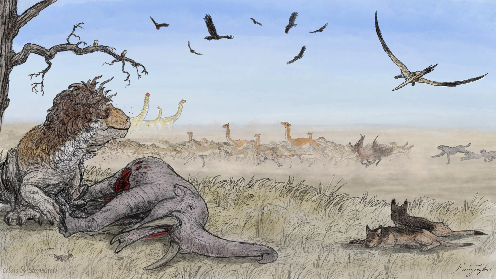
The Great Drying was one of the most consequential climatic and ecological events in the geological history of Kaimere. Beginning approximately eight million years ago, it transformed much of the Known World from a predominantly forested and seasonally open landscape into an extensive system of cold, arid grasslands, dry savannas, and open woodlands. The event fundamentally altered the distribution of vegetation, reorganized terrestrial food webs, facilitated extensive faunal interchange between previously isolated landmasses, and precipitated one of the greatest episodes of extinction since the Dynastic Extinction.
The importance of the Great Drying extends beyond the immediate climatic changes that gave it its name. It represents a particularly clear example of the relationship between environmental context and evolutionary success in Kaimere. Although predation, competition, disease, and stochastic events all influence the survival of individual species, the broader history of the planet suggests that changes in climate and geography are frequently the principal factors determining which ecological groups prosper and which decline. The Great Drying dramatically altered the conditions under which organisms lived, favoring animals adapted to open terrain, efficient locomotion, and relatively sparse vegetation while placing considerable pressure upon lineages dependent upon closed forests and abundant browse.
The event also produced a striking biogeographical reorganization. Falling sea levels exposed new routes between Arvel, Ni'Khar, and Kairul, greatly increasing the rate of interchange between their respective faunas. Animals previously restricted to separate continental systems could move across newly accessible lowlands and island chains, resulting in the rapid expansion of several previously isolated groups. This interchange was accompanied by a major Harvest, principally from Miocene North America, which introduced a diverse assemblage of grazing and browsing mammals particularly well suited to the emerging environment. Horses, camelids, pronghorns, protoceratids, and several large predators became prominent components of the fauna.
The resulting ecosystem was unusual in Kaimeran history. For a considerable interval, much of the Known World supported a relatively low-diversity assemblage dominated by cursorial herbivores and the predators that followed them. Horses and camels were particularly abundant, while native sauropods and large proboscideans persisted primarily in regions retaining sufficient woodland. Large megaraptorans remained the dominant terrestrial predators, but their subordinate competitors included machairodonts, hyenas, dromaeosaurs, noasaurs, and several large mammalian carnivores. The ecological structure was not entirely unfamiliar in comparison with the grassland ecosystems of modern Earth, although the continued presence of giant dinosaurs and other endemic Kaimeran lineages gave it a distinct character.
The Great Drying lasted approximately two million years, although its most severe effects varied considerably between regions. After an initial period of rapid transformation, climatic conditions stabilized sufficiently for distinctive new species to evolve within the altered ecosystems. This interval produced several important lineages that would influence the subsequent history of Kaimere, including the ancestors of many modern runnendrakes, certain grassland megaraptorans, and several large cursorial mammals. The eventual end of the Great Drying, around six million years ago, was itself abrupt and destructive. A rapid return to warmer and more humid conditions inundated many of the newly established grasslands, transformed the proto-Inland Sea into the shallow seaway known today, and caused the extinction of numerous animals that had become adapted to the cold, open environment.
02 · Beginnings
Climatic and Geological Background
The Pre-Drying Environment
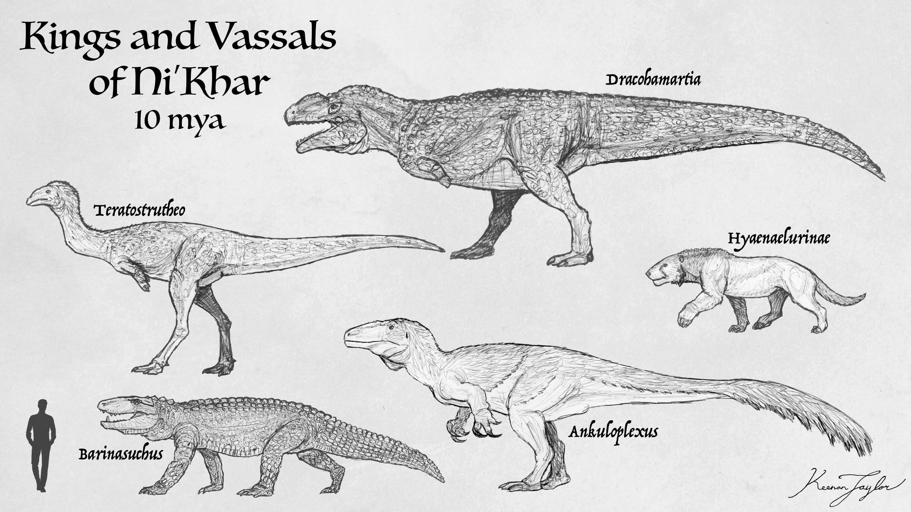
The four million years preceding the Great Drying were characterized by considerable environmental fluctuation. The Known World was not a stable ecological system, and its climatic conditions had already been changing in response to continental movement, mountain building, invasive species impact, and variations in oceanic circulation. Nevertheless, much of the region continued to support relatively extensive forests, open woodlands, and mosaic savannas. These environments provided a broad range of habitats for browsing and mixed-feeding herbivores, large terrestrial predators, and numerous smaller animals.

The vegetation of northern Arvel and southern Ni'Khar was particularly vulnerable to the changes that followed. Although open habitats were already present, they existed as part of a broader landscape in which forests and wooded regions remained important components of the ecosystem. Large herbivores could move between open feeding grounds and wooded refuges, while browsers and mixed feeders continued to exploit the extensive vegetation available within these mosaics.
The geography of the Known World was also undergoing significant change. Arvel was moving northward and rotating, while the relative positions of Arvel, Ni'Khar, and neighboring continental plates continued to alter the circulation of winds and ocean currents. Approximately ten million years ago, a land bridge had already facilitated a major faunal interchange between Arvel and Ni'Khar. This earlier connection demonstrated that the continents were becoming increasingly accessible to one another, although substantial barriers and island chains continued to restrict terrestrial movement.
The elevation of major mountain systems added another important constraint. The highlands of Arvel and Ni'Khar were rising, creating increasingly formidable barriers to moisture-bearing atmospheric systems. Storms that had previously penetrated inland with relative ease encountered greater topographic resistance, while the resulting rain shadows expanded across large portions of the continental interiors. The climatic transformation that followed was therefore not attributable to a single event, but to the culmination of several geological and atmospheric trends.
Onset of the Great Drying
Around eight million years ago, the Known World experienced a sharp and rapid trend toward greater aridity. The climate also became substantially colder, producing a combination of environmental pressures that was particularly severe for the established vegetation communities.
The northward movement and rotation of Arvel are considered major contributing factors. As the continent changed position, the circulation of winds and ocean currents was altered, reducing the penetration of moisture into parts of the Known World. At the same time, the rising mountains of Arvel and Ni'Khar increasingly obstructed storms moving inland. The result was a rapid decline in the availability of moisture across northern Arvel and much of Ni'Khar south of the equator.
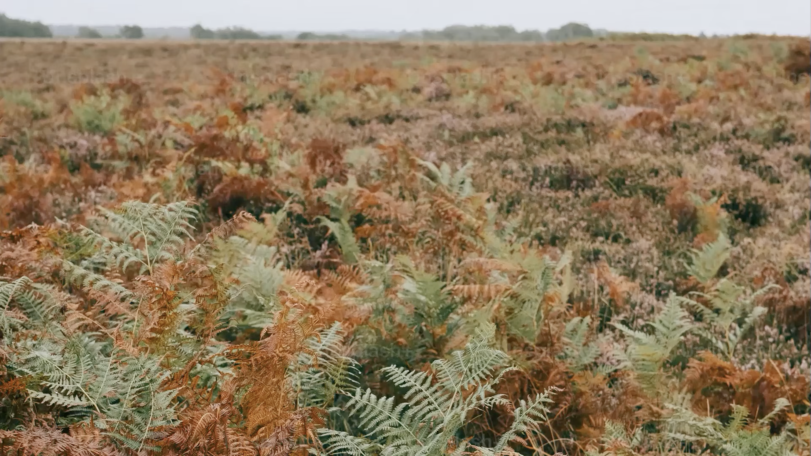
The transformation was sufficiently pronounced that environments previously characterized by open forests and mosaic savannas began to develop into much more extensive grasslands. Woodlands became increasingly scattered, and many areas that had supported substantial tree cover were reduced to dry savanna or open grassland. Vegetation did not disappear entirely. Trees, horsetails, and ferns continued to occur throughout the landscape, particularly around rivers, springs, and sheltered valleys, but they no longer constituted the dominant structure of many regional ecosystems.
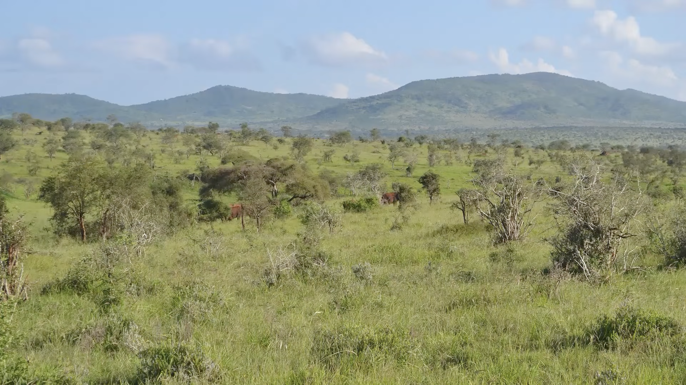
The decline in temperature placed additional pressure upon native flora. The combination of reduced rainfall and cooling conditions affected plant productivity and distribution, reducing the availability of browse for herbivorous animals. This created a cascading ecological response. Herbivores dependent upon forests and abundant foliage experienced declining resources, which in turn affected the carnivores that relied upon them. Many established lineages found themselves increasingly restricted to isolated woodland refuges, while animals already adapted to open terrain expanded rapidly.
In broad terms, northern Arvel and most of Ni'Khar south of the equator became dry savannas with scattered woodlands. The transformation was not uniform, but it was sufficiently extensive to change the dominant ecological character of the Known World. For several million years thereafter, open-country animals would constitute a much larger proportion of its terrestrial fauna than at any other time in its more recent geological history.
Polar Glaciation and the Reduction of Sea Levels
The cooling of the Known World was part of a broader planetary climatic transformation. Kaimere as a whole became considerably colder, with expanding glaciation in the polar regions, particularly in the Northern Hemisphere. The accumulation of ice at high latitudes produced a substantial reduction in global sea levels, as increasing quantities of water became trapped within continental ice sheets.
The consequences were not limited to the direct loss of ocean water. The enormous gravitational influence of expanding ice sheets also affected the distribution of water across the planet. The growing northern ice masses exerted a gravitational pull that drew ocean water toward the northern hemisphere, further reducing sea levels in the southern regions. This effect amplified the geographical consequences of glaciation and contributed to the exposure of continental shelves, shallow seaways, and previously submerged lowlands.
The reduction in sea level was particularly important for the biogeography of the Known World. Ni'Khar had already maintained connections with Arvel to the south and Kairul to the east, but much of the earlier interchange appears to have occurred through island hopping and intermittent coastal access. The new sea levels greatly increased the extent of exposed terrain between these regions. Routes that had previously been difficult or impossible for terrestrial animals became substantially more accessible.
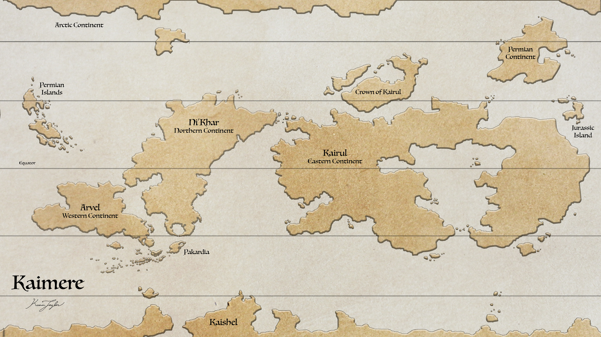
The newly exposed passages permitted an extensive expansion of terrestrial fauna between the continents. Ni'Khari animals, already adapted to relatively dry conditions, frequently possessed advantages in these interchanges. Their ability to survive in arid environments allowed them to exploit the expanding open territories and establish themselves in regions where more forest-dependent animals were struggling.
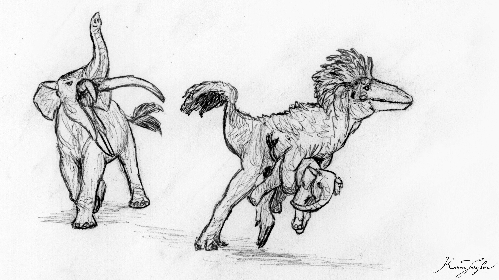
The most consequential immigrants from Arvel were the Apeirovenatorids, a family of endemic megaraptorans characterized by an unusually lightweight construction. Their skeletons and general body proportions allowed them to attain immense size and bulk without the structural and energetic costs associated with a proportionally heavier body. They rapidly expanded across the newly accessible regions, with some members spreading as far as Kairul within a comparatively short geological interval. Their success in the emerging badlands was particularly significant, and several later lineages of large Kaimeran predators trace their ancestry to this expansion.
Formation of the Proto-Inland Sea Basin
The lowered sea levels also transformed the geography of the region that would become the Trakaiam Sea. The Inland Sea was arguably first established in its recognizable geological form during the Great Drying, although its environment was substantially different from the modern seaway.
The region had previously been associated with the northern Arvelith and western Ni'Khari continental plates. As sea levels declined and the surrounding geography changed, extensive lowlands became exposed. These landscapes included grassy meadows, freshwater basins, and winding brackish channels. Rather than forming the continuous shallow marine ecosystem known today, the basin existed as a complex mosaic of terrestrial and aquatic habitats.
This lowland environment became an important refuge during the wider climatic deterioration. While surrounding continental regions became increasingly arid, the basin retained freshwater resources and more productive vegetation. Its rivers and wetlands supported animals that could no longer persist in the expanding grasslands, while its scattered woodlands provided important habitat for large browsers and forest-associated predators.
The development of this refuge was especially important because the Great Drying otherwise eliminated or severely reduced many of the environments upon which native herbivores depended. Some lineages that would likely have disappeared from much of the Known World survived because they were able to persist in the lowlands of the proto-Inland Sea. The region therefore became a center of ecological continuity amid a broader landscape undergoing extensive turnover.
03 · The Arrivals from North America
The Major Faunal Interchange
The Miocene North American Harvest
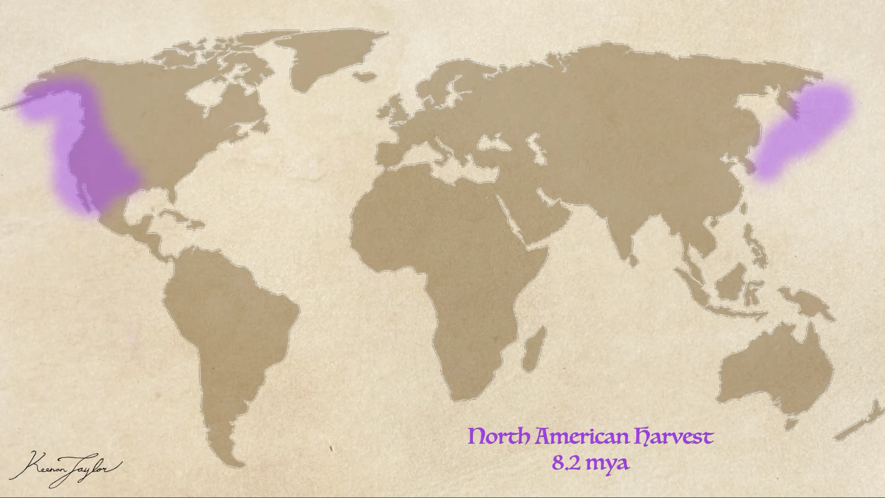
The combination of rapid climatic deterioration, expanding glaciation, falling sea levels, and extensive faunal interchange created conditions in which another Harvest was expected. This introduction appears to have drawn primarily upon Late Miocene North American fauna, with the possibility that certain animals, particularly several walrus species, were collected from East Asia as well.
The majority of the introduced animals appear to have originated from the inland territories of North America. This was particularly significant because the source environments contained numerous mammals adapted to open habitats, seasonal climatic conditions, and relatively extensive grasslands. The resulting fauna was unusually well suited to the new environmental context of Kaimere.
The Harvest introduced a considerable number of equids, camelids, pronghorns, protoceratids, proboscideans, carnivores, and other mammals. Their arrival did not simply increase the diversity of the Known World. It altered the balance of its terrestrial ecosystems by introducing animals that were often better adapted than native species to the increasingly open and cold conditions.
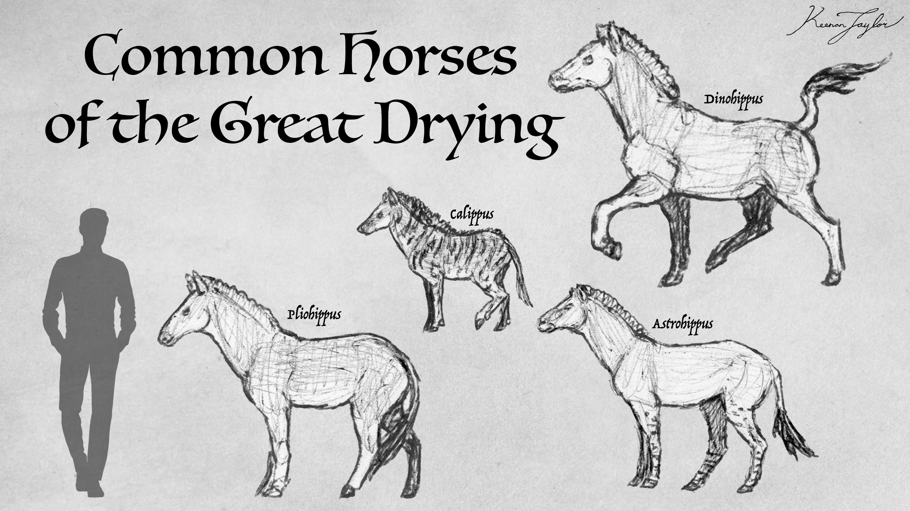
Among these introductions, horses proved exceptionally successful. Native hipparion horses continued to exist and found some favorable environments, but the newly harvested equine taxa became the most abundant members of their size class in many regions. Some fossil formations suggest that large grassland specialists occurred in enormous herds, potentially numbering in the thousands.
Camelids also prospered, particularly members of Aepycamelus. Pronghorns and protoceratid slinghorns were similarly successful. These groups occupied feeding and locomotor niches that had not previously been represented by such abundant, highly specialized mammals. Although native runnendrake elasmarians, courser-drake protoceratopsians, and various ungulates were already capable of exploiting open environments, the new mammals appear to have achieved greater numerical success in many of the best-documented formations.
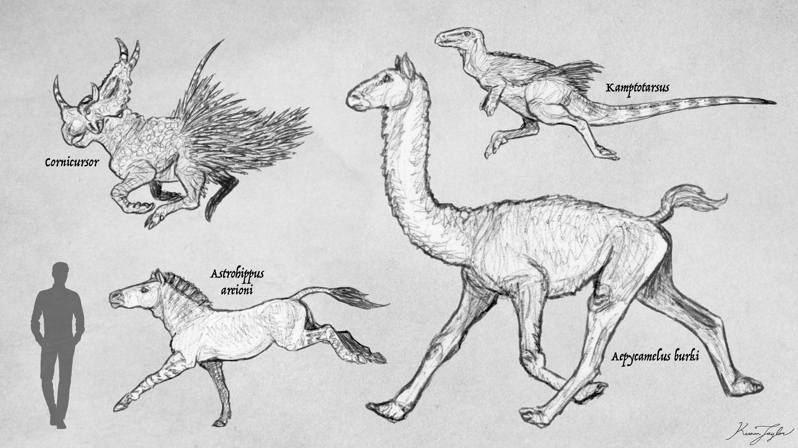
The expansion of these cursorial herbivores was one of the defining ecological characteristics of the Great Drying. Their increased abundance supported a corresponding expansion of predators specialized in hunting mobile prey, while their feeding habits further modified the vegetation of the open landscapes. Extensive grazing and browsing pressure helped maintain the open character of many regions, although the extent to which large herds actively contributed to the persistence of grasslands remains difficult to establish.
The Uneven Success of Proboscideans
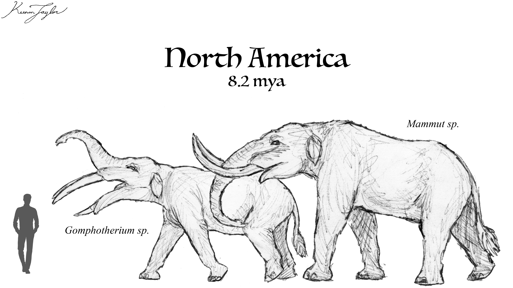
The North American Harvest also introduced two important groups of proboscideans: a gomphothere and a mastodont. Their success was considerably more restricted than that of the horses and camelids.
Certain regions of Ni'Khar provided suitable habitat for gomphotheres, particularly where scattered woodland and freshwater resources persisted. Mastodonts were more successful in southern Arvel, which retained greater forest cover than the northern and central portions of the continent. Their presence was nevertheless limited by the general reduction in available browse and the fragmentation of wooded habitats.
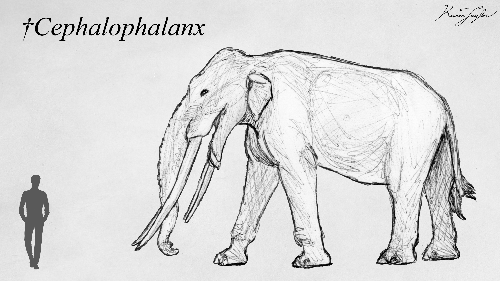
The decline of the native Cephalophalanx is especially noteworthy. This enormous herbivore had previously been among the most common large animals in the Known World, with some formations suggesting that it dominated the large-herbivore assemblage. It appeared well suited to open environments and had developed considerable body size during its period of ecological success. Yet its populations declined dramatically around the beginning of the Great Drying, and the lineage appears to have disappeared from most of the Known World during this interval.
The causes of its extinction remain uncertain. One possibility is that the animal had become increasingly dependent upon mosaic forests and mixed vegetation despite its ability to inhabit relatively open terrain. Its considerable size may also have become disadvantageous as vegetation productivity declined. The species had apparently enlarged over the course of its evolutionary history, possibly in response to predation pressure from native styraconychid megaraptorans. Although this size would have provided a substantial defensive advantage, it also required greater quantities of food. When the woodlands upon which its populations relied became fragmented or disappeared, its large body may have become an increasingly costly adaptation.
The disappearance of Cephalophalanx created opportunities for other large herbivores. The ancestors of the grassland oliphaunts, an older gomphothere lineage, became increasingly prominent in the open habitats. Their comparatively smaller size may have allowed them to survive on less available vegetation, although this remains a hypothesis rather than a demonstrated explanation for their success. The gomphothere Paleoliphauntus was by this time fairly abundant and seems to have at least begun the conversion to grass specialization, its once-broad shovel tusks and jaw shortening into the more weapon-adapted jaws of their descended lunar oliphaunts, though they probably still relied on trees for some of their diet.
The newly harvested mastodonts and gomphotheres therefore occupied only portions of the wider landscape, while the ancient grassland oliphaunt lineage became increasingly important in the dry continental interiors.
The Decline of Forest-Dependent Herbivores
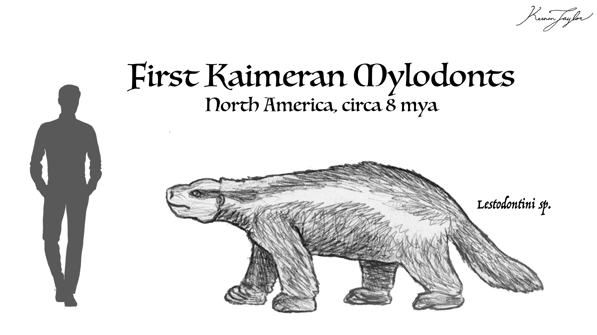
The Great Drying was particularly unfavorable for herbivores dependent upon extensive forest vegetation. Several large thescelosaurs are known from this interval, along with newly harvested lestodont sloths, but neither group appears to have been especially common in much of the Known World.
The scarcity of large browsers is one of the most striking features of the period. Outside isolated forest refuges and the more favorable lowlands, the majority of large herbivores appear to have been cursorial animals adapted to open terrain. Native and introduced ungulates, horses, camelids, runnendrakes, and other grassland specialists formed the dominant herbivore assemblage.
Titanosaurs remained important, but their distribution was increasingly influenced by the availability of suitable wooded environments. They appear to have moved between isolated forests, exploiting the vegetation that remained available. Their movements may have contributed to the pressure placed upon other giant browsers and mixed feeders, especially as the remaining wooded resources became increasingly scarce. The extent to which these interactions directly caused additional extinctions is unknown, but they would have intensified competition within the surviving woodland communities.
04 · LIFE of the Badlands
The Terrestrial Ecosystems of the Great Drying
The Expansion of the Badlands
Northern Arvel and much of Ni'Khar developed broadly similar ecosystems during the Great Drying. Both regions were dominated by cold, arid grasslands and dry savannas, although northern Arvel appears to have retained somewhat more woodland.
Their herbivore communities were dominated by horses, camels, and runnendrakes, with sauropods, mastodonts, and gomphotheres occurring where sufficiently extensive vegetation remained. The growing abundance of cursorial herbivores supported numerous predators adapted to hunting animals across open terrain.
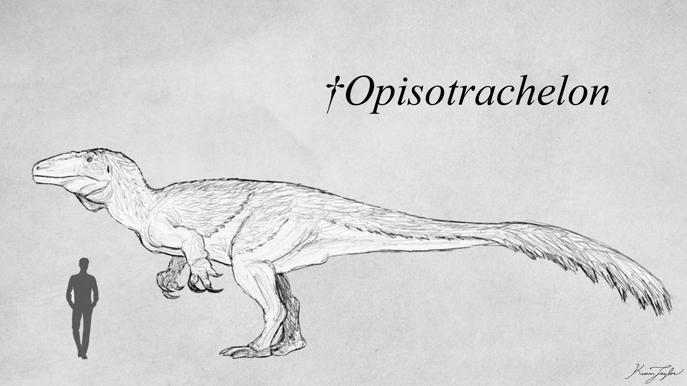
The most influential predators were the giant megaraptorans. In northern Arvel, the giant styraconychid Opisotrachelon was the principal apex predator. In Ni'Khar, the robust monarch radiation expanded rapidly, with Teratoantecessor becoming the dominant large predator. Both lineages had representatives in the other continent, but each remained most abundant within its respective region.

The robust monarchs were particularly successful because of their lightweight construction and capacity to occupy open terrain. Their descendants included the lineages that would later produce the zentaur and oritaku, among the most significant predatory animals of the modern Known World. The ancestor of Sicaricestus and Yagakaluba was therefore already part of a highly successful predatory radiation during the Great Drying.
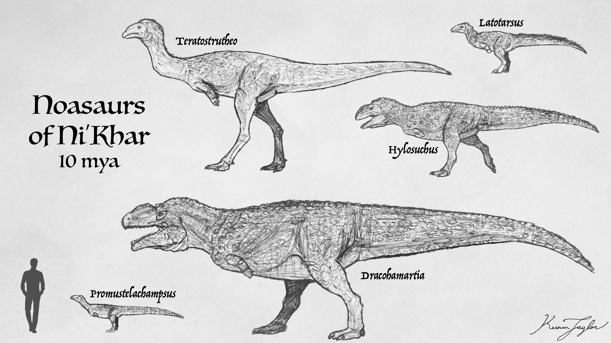
The subordinate predator guilds were similarly diverse. Noasaurs were particularly important in Ni'Khar, while dromaeosaurs and other small to medium-sized theropods remained abundant in both continents. The large noasaurs Latotarsus and Teratostrutheo appear to have occupied subordinate predatory niches beneath Teratoantecessor. The giant noasaur Dracohamartia, which was less adapted to open environments, appears to have disappeared from the Known World through competition with the robust monarchs, although it remained present in northern hemisphere formations.
Mammalian predators were also well represented. Nimravides and Amphimachairodus were particularly successful, while hyenas tentatively assigned to Adcrocuta that arrived from Africa during the harvest prior became common in the open terrain. Epicyon was less successful than many of its competitors, with its more robust body and less cursorial locomotion placing it at a disadvantage in the expanding grasslands. Most surviving populations appear to have been restricted to the valleys, wetlands, and other lowland habitats surrounding the proto-Inland Sea.
The Nimravids and the Rise of Open-Country Machairodonts
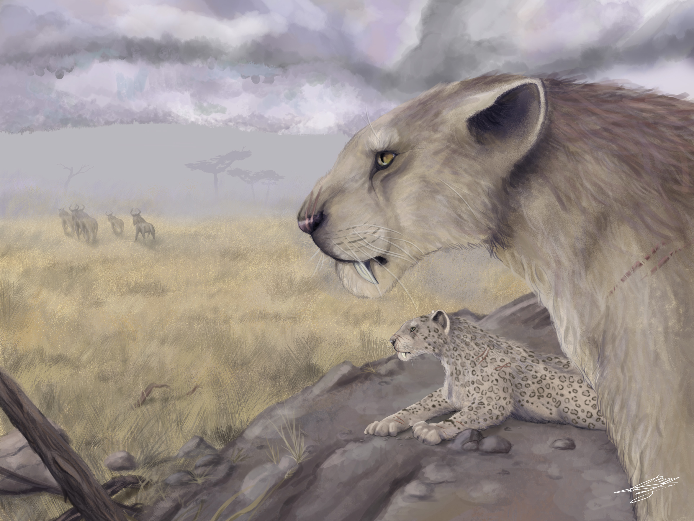
The predator communities of the Great Drying were strongly influenced by the arrival of two machairodont lineages, Amphimachairodus and Nimravides. Both had been introduced through the North American Harvest and were already adapted to relatively open environments.
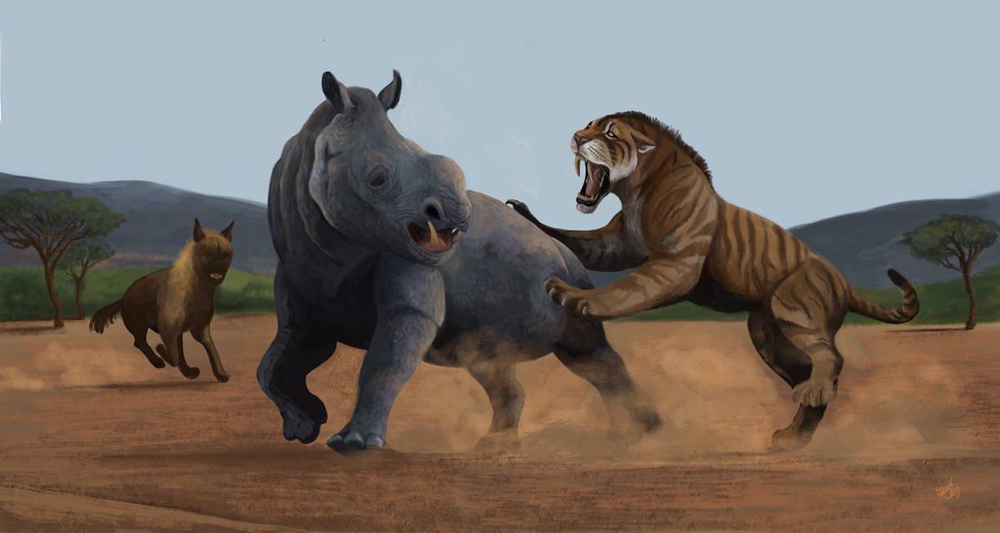
Their success in Kaimere was not identical. Nimravides appears to have been particularly successful, expanding over an enormous geographical range extending from southern Arvel to regions north of the equator in Ni'Khar. Its success was closely associated with the abundance of horses and other cursorial herbivores. Amphimachairodus also prospered, and its North American relatives show evidence of a strong equine preference. The combination of abundant prey and extensive open habitat provided an ideal context for both genera.
The relationship between these two machairodonts remains uncertain. They were similar in size and occupied broadly comparable habitats and prey niches. It is possible that they partitioned their resources through differences in activity patterns, with one preferring daytime hunting and the other being more nocturnal, but no definitive evidence establishes such a division. Their fossil distribution suggests that they coexisted successfully over considerable periods.
The success of Nimravides was especially important for the subsequent history of Kaimere's open-country predators. Its descendants included Nimravides paracinonyx, a large and highly cursorial species that appears to have specialized in hunting horses, camels, and running protoceratopsians. This species was an important predator during the later stable phase of the Great Drying and is believed to have been ancestral to Dromaeailurus, a major predator of the subsequent Anchored Period grasslands.
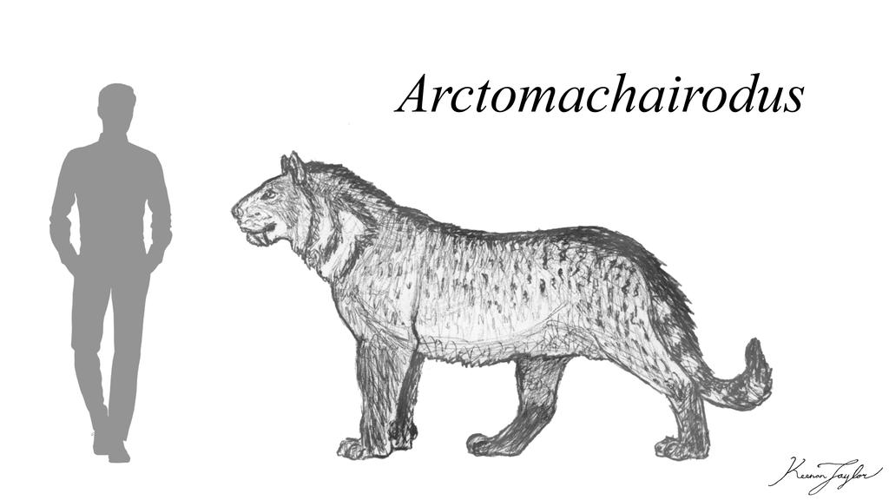
The forest-specialized machairodont lineage represented by the ancestors of Arctomachairodus also underwent an important ecological transition. During the Anchored Period, Arctomachairodus would become one of Kaimere's largest cats and a dominant predator of forest environments. Its ancestors, however, appear to have been more adapted to open terrain when originally introduced. The expansion of grasslands during the Great Drying may therefore have been an important stage in the development of the lineage's later ecological diversity.
A Colder Woodland Refuge of Arvel
Southern Arvel was considerably different from the northern continent. Although it also experienced cooling and aridity, its position relative to the Horse Latitudes and the generally offshore direction of the winds allowed it to retain more extensive woodland. Seasonal monsoons may have contributed to the persistence of these forests.
Mastodonts were particularly common, while horses, camels, and elasmarians were frequent herbivores. The region consequently maintained a greater proportion of browsing and mixed-feeding animals than the open grasslands farther north.
The dominant predator was a large styraconychid megaraptoran, considered either a cousin or an ancestor of the western megalosaur. Unlike the robust monarchs of Ni'Khar, this predator occupied a landscape in which woodland structure remained important. Amphicyonid bear-dogs were also successful, functioning as subordinate predators within the southern woodland ecosystems. Their presence further illustrates the ecological contrast between the open grasslands of northern Arvel and the more wooded environments farther south.
Southern Arvel became an important refuge for animals that could not persist in the drier regions to the north. Nevertheless, its forests were not immune to the broader climatic deterioration. Their continued existence depended upon favorable local conditions, and the animals inhabiting them remained subject to the pressures imposed by shrinking and increasingly isolated woodland habitats.
A Refuge of Freshwater and Woodland
The lowlands of the proto-Inland Sea were among the most productive environments of the Great Drying. In contrast with the surrounding dry continents, this region retained extensive freshwater habitats and a greater abundance of vegetation. Although a number of saline basins remained, many had been flushed and replaced by freshwater systems.
The largest herbivores in this environment were generally mastodonts and gomphotheres rather than sauropods, which were better suited to dry forest environments. The mammalian proboscideans could exploit the more varied vegetation of the lowlands, while other herbivores occupied the meadows, wetlands, and woodland margins.
Large styraconychid megaraptorans were the dominant predators. Many of these animals were fish specialists, and the region appears to have been especially important in the early history of several modern Kaimeran lineages. The ancestry of the alar, yotenstork, and ba'khar is associated with this assemblage of wetland-associated styraconychids.
The vassal predator guild included a smaller, low-slung relative of the ancestor of the zentaur, which may have been ancestral to the modern kurajaku. Epicyon was also common, as were Amphimachairodus and several nimravid species. Crocodilians were particularly abundant and diverse, exploiting the extensive aquatic habitats and the concentration of prey around freshwater systems.
The proto-Inland Sea therefore supported an ecological community that differed markedly from the surrounding badlands. While large cursorial mammals dominated the continental grasslands, the lowlands preserved a greater diversity of wetland and woodland animals. The region's freshwater resources were especially important during the Great Drying, providing a refuge for animals that would otherwise have been vulnerable to the expanding aridity.
Southern Refugia and Island Interchange
The southern portion of the Known World experienced particularly cold conditions during the Great Drying. Sea levels were lower than they would be during the later Pleistocene interchange approximately 1.5 million years ago, and the exposed geography permitted considerable biotic exchange through the Pakardiokhalin Archipelago.
The seaway between Tassuk, Khalren, Otro, Qadan, and the To Katon Islands appears to have become a broad, marshy lowland. This region resembled the lowlands of the proto-Inland Sea, although its relative isolation produced a distinctive faunal assemblage. It represented a partially exposed remnant of the continental terrain that had existed before the archipelago separated from Kaishel.
The lowland marshes and freshwater systems provided suitable habitat for a diverse range of animals. Sophitheriid fabadonts, parankylosaurs, parasauropods, plectursid multituberculates, and elasmarians were common herbivores. Their presence indicates that the region retained a substantially different ecological character from the open grasslands of northern Arvel and Ni'Khar.
The predator community was similarly distinctive. Eutriconodonts, heterothermes, large firebirds, and dromaeosaurs were among the principal predators. Unlike the northern continents, the archipelago does not appear to have supported an undisputed giant theropod apex predator during this period. Isolated teeth attributed to coelophosaurs and styraconychids suggest that some larger predators may have arrived from Blackfish Island and Qajar, but the evidence is insufficient to demonstrate that either group established a permanent dominant position.
Blackfish Island appears to have been connected to the wider archipelago during this interval, perhaps for the only time since the Dynastic Extinction. This connection is considered a likely source of the island's mastodon and choerolophodont populations. The two proboscideans are also found in other regions, but the interchange through the exposed archipelago provides a plausible route for their establishment on the island.
Pakardia itself appears to have remained separated from the exposed lowland system, although its proximity allowed some interchange. The precise extent of these movements is difficult to reconstruct. Much of the relevant geological record is now submerged, while the formations accessible to modern surveys are often those exposed by the continued northward movement of the archipelago. Consequently, the surviving fossil record is biased toward certain geological structures and may not adequately represent the full diversity of the region.
The archipelago was generally cold and arid despite its wetlands. Southbound wind currents and rivers supplied by highland springs provided the necessary freshwater, allowing productive marshes and lowland woodlands to persist within the broader southern environment.
05 · Residents of the Badlands
The Stabilization of the Great Drying
Development of the Mature Grassland Fauna
Following the initial climatic disruption and associated faunal interchange, conditions gradually stabilized. The climate remained cold and arid, but the most rapid geographical and environmental changes diminished. This stability allowed new species to evolve within the open ecosystems and produced a distinctive assemblage of animals adapted specifically to the Great Drying.
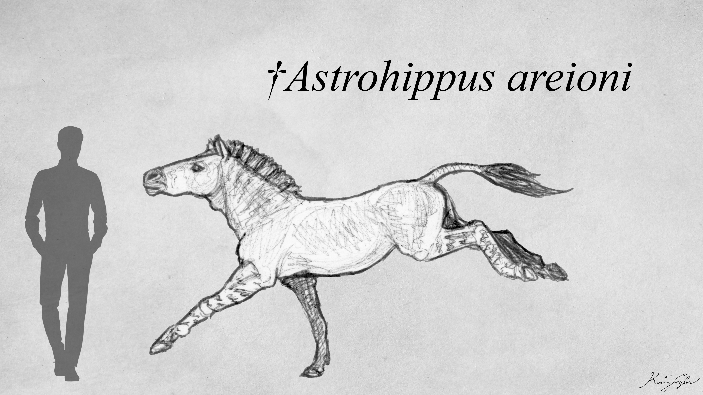
The most successful herbivores in the better-documented formations were equids and camelids. The equin horse Astrohippus became particularly abundant, with several species known from numerous relatively complete specimens. The large Astrohippus areioni was especially widespread, occurring on both Arvel and Ni'Khar. Its abundance suggests that it was among the most successful large herbivores of the period.
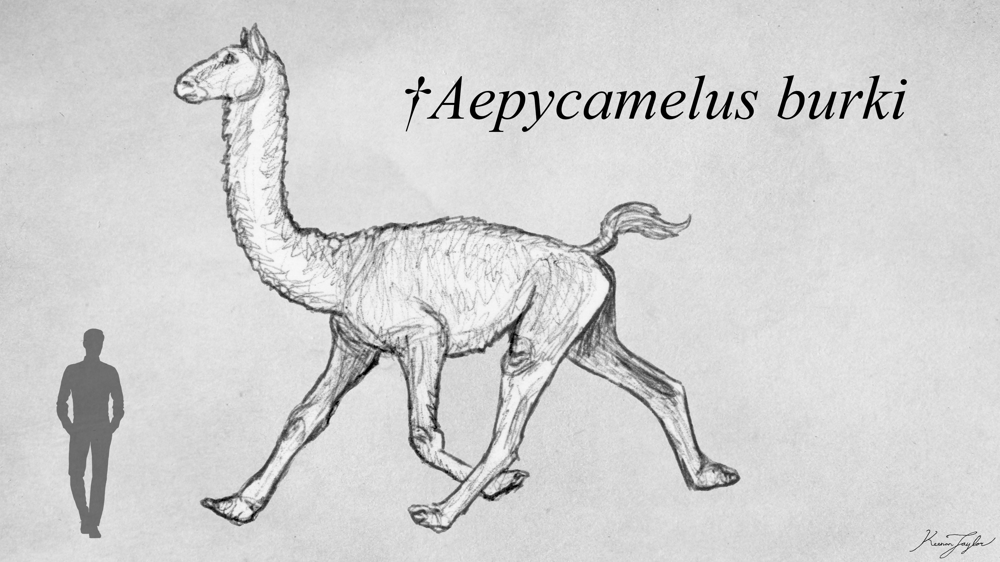
Camelids also underwent considerable diversification. Several species of Aepycamelus became established, with the large Aepycamelus burki particularly common. It is frequently found in association with Astrohippus areioni, indicating substantial geographical and ecological overlap. Their success was likely associated with the combination of open habitat, extensive available forage, and adaptations for efficient travel across large areas.
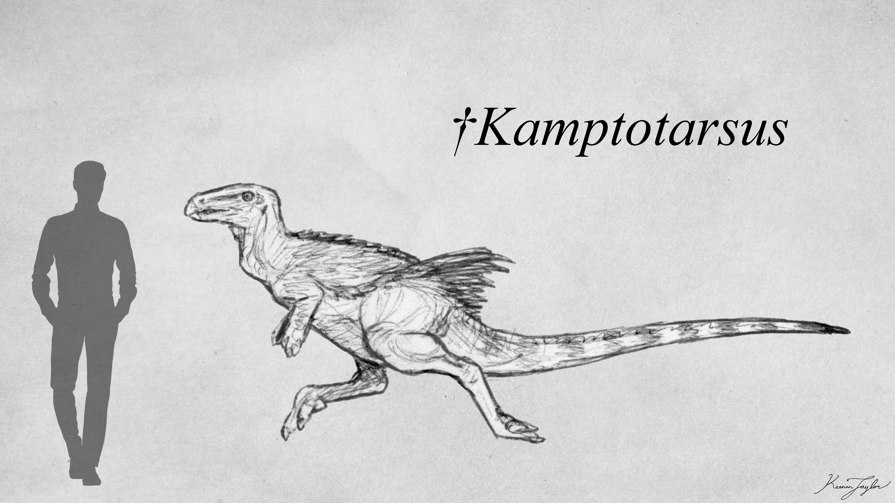
The runnendrake elasmarians also underwent a major period of diversification. The genus Kamptotarsus represents an important stage in the development of the modern cursorial runnendrakes, with anatomical features increasingly suited to rapid locomotion across open terrain. The Great Drying appears to have been a major evolutionary interval for this group, establishing adaptations that would remain important in later grassland ecosystems.
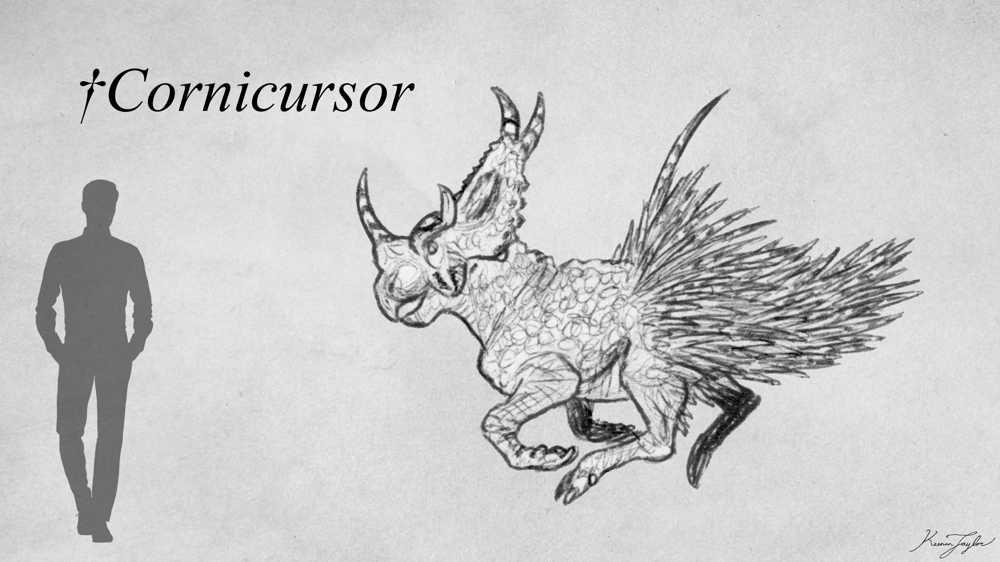
The running protoceratopsian Cornicursor has also been found in association with both Aepycamelus burki and Astrohippus areioni. It is possible that these species maintained mutually beneficial associations. Cornicursor would have contributed superior color vision and olfactory sensitivity, while camels and horses possessed other sensory advantages, including a higher field of vision in the camel and particularly acute hearing in the horse. Such an association could have improved predator detection for all three species, although the available fossil evidence does not conclusively establish whether their relationship was intentional or merely reflected shared habitat preferences.
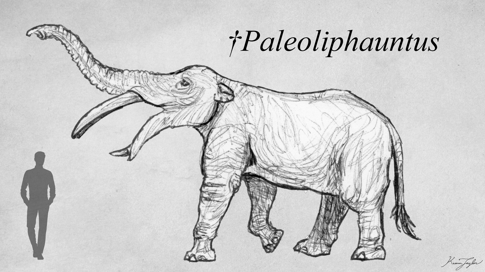
The gomphothere Paleoliphauntus was also well established by this time. Its anatomy suggests the beginning of a transition toward greater grass specialization. The broad shovel-like tusks and relatively generalized jaw structure of its ancestors were becoming modified, with a shortening of the jaws and a greater emphasis upon weapon-like tusal structures. These changes foreshadowed the later lunar oliphaunts. Nevertheless, Paleoliphauntus likely retained a mixed diet and continued to rely upon trees for a portion of its food intake.
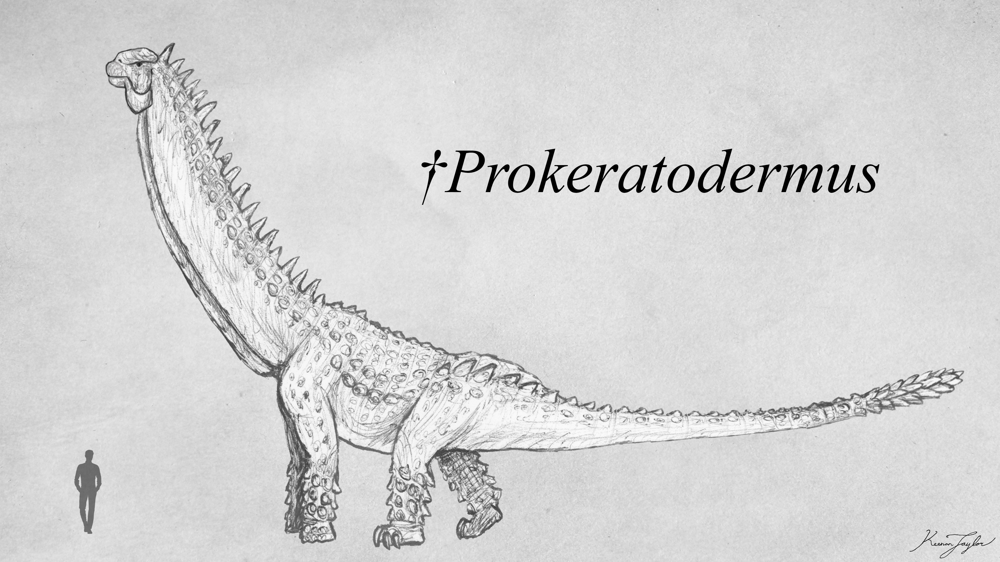
The likely ancestral genus of Kipourotitan, Prokeratodermus, also developed longer legs than its earlier relatives. These proportions permitted more efficient strides and greater movement across the open landscapes. Together, these animals demonstrate that the Great Drying was not simply a period in which already-adapted grassland species became abundant. It was also a major interval of evolutionary specialization, during which several native lineages developed new locomotor and feeding adaptations in response to the altered environment.
The Cursorial Predator Guild
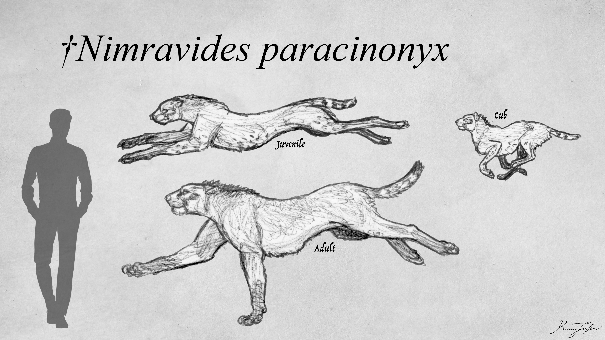
The new herbivore communities supported the diversification of predators adapted to pursuing or ambushing fast-moving prey. The machairodont Nimravides paracinonyx was particularly important. This large species appears to have been a dedicated predator of horses, camels, and running protoceratopsians, and its fossils are frequently found in association with these herbivores. It was more cursorial than its ancestors and may have hunted socially, although the latter interpretation remains provisional.
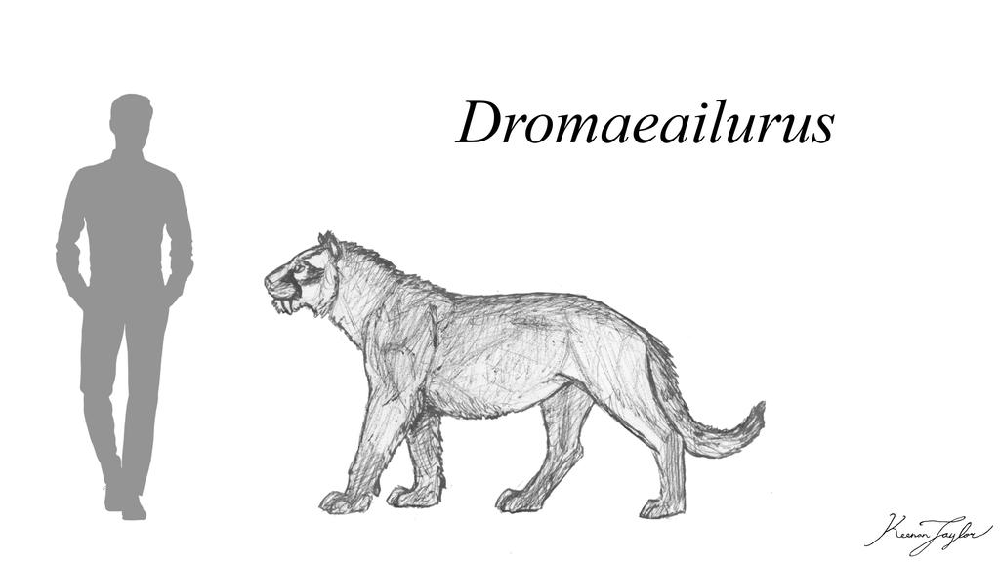
Its specialization makes it one of the most significant predators of the mature Great Drying ecosystem. The species is believed to have been ancestral to Dromaeailurus, which later became a dominant open-country predator during the Anchored Period. The evolutionary success of Nimravides paracinonyx therefore extended beyond the Great Drying itself, establishing a predator lineage that would continue to shape grassland communities for millions of years.
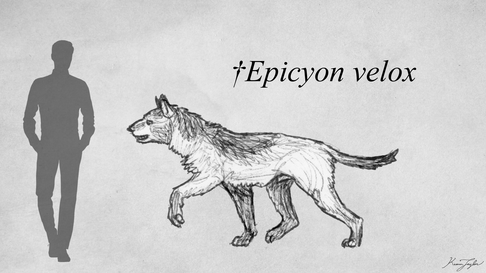
Epicyon also underwent a significant ecological transition. Its earlier relatives were more strongly adapted to ambush predation, and several species continued to inhabit forests and swamps around the proto-Inland Sea. However, Epicyon velox appears to have developed adaptations associated with travel through open terrain. Its name refers to its relatively long limbs, but the feet are comparatively short. This suggests that it may have been adapted more for efficient long-distance travel than for sustained high-speed pursuit.
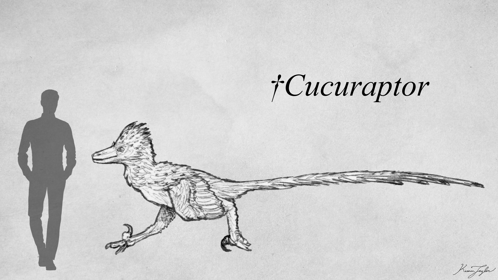
The pheasant cockatrice Cucuraptor represents another example of convergent adaptation to open terrain. Although it was not a member of the true cockatrice clade, its long feet and the beginnings of an arctometatarsal condition indicate that it developed locomotor features resembling those of later cursorial predators. Its presence among the Great Drying fauna demonstrates that the pressures favoring efficient movement through open environments affected several unrelated theropod lineages.
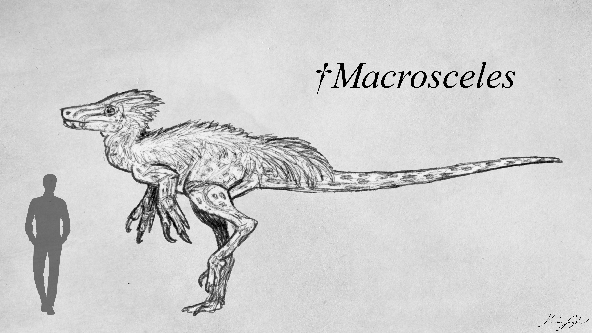
The megaraptorid Macrosceles was another common predator throughout the Great Drying. It is regarded as ancestral to the modern taro lineage. Its success was associated with its ability to operate as a subordinate predator beneath the larger megaraptorans, exploiting prey that could be taken without directly competing with the dominant apex predators.
The largest noasaur and megaraptorid predators also became reorganized during this period. Latotarsus and Teratostrutheo occupied subordinate positions beneath the robust monarch Teratoantecessor in Ni'Khar. The giant noasaur Dracohamartia, less well adapted to open terrain, appears to have disappeared from the Known World under the pressure of competition with the robust monarch radiation. Its continued presence in northern hemisphere formations suggests that the extinction was geographically restricted rather than a complete disappearance of the lineage.
The Robust Monarchs and the Great Drying Apex Predators
The robust monarchs were among the most consequential predator groups of the period. Their lightweight construction provided an unusual combination of mass and locomotor efficiency, allowing them to attain immense sizes while remaining comparatively economical in their skeletal structure.
In Ni'Khar, Teratoantecessor became the dominant apex predator. Its presence was particularly important because it established the ecological foundation of the later robust monarch lineages. The descendants of this group included the ancestors of the zentaur and oritaku, which would become major predators of the Known World in later periods.
Arvel retained a different dominant lineage. The giant styraconychid Opisotrachelon remained the principal apex predator in northern Arvel, while its relatives and robust monarch competitors were present but generally less abundant. Both predator groups could occur on either continent, but their ecological dominance remained geographically uneven.
The contrast between the two lineages demonstrates that the Great Drying did not produce a uniform replacement of all native predators by newly introduced groups. Instead, the altered climate and expanding grasslands favored some native groups while disadvantaging others. The robust monarchs were particularly successful in Ni'Khar, while styraconychid lineages remained dominant in several regions of Arvel and the proto-Inland Sea.
The prolonged stability of the Great Drying allowed these predator communities to become well established. The dominant megaraptorans shaped the structure of their respective ecosystems, while subordinate theropods, hyenas, machairodonts, and other predators exploited smaller prey and habitat-specific opportunities. The resulting communities were comparatively predictable, despite the harshness of the broader environment.
06 · Further Impact
Regional Persistence and the Later Great Drying Ecosystem
The Continuing Distinction Between Continental Regions
As the Great Drying progressed, the geographical differences established during its early stages became increasingly important. Northern Arvel and southern Ni'Khar remained broadly characterized by open grasslands and dry savannas, while southern Arvel retained its colder woodland environments. The proto-Inland Sea continued to serve as a lowland refuge, and the Pakardiokhalin Archipelago maintained a distinctive marsh-and-woodland fauna.
In northern Arvel, the combination of extensive dry woodlands and open savannas supported abundant herds of horses, camels, and runnendrakes. The largest herbivores included sauropods, mastodonts, and gomphotheres, which continued to shape the vegetation. Arveloraptor remained the principal apex predator, with a robust monarch ancestor of Sicaricestus and Yagakaluba occupying a subordinate but still formidable position. Epicyon, Nimravides, and Cucuraptor all remained successful in this region.
Ni'Khar supported a similar but generally more open ecosystem. The robust monarch Teratoantecessor was the dominant predator, with Latotarsus and Teratostrutheo occupying subordinate predatory roles. Macrosceles was common, and the cursorial herbivores were particularly abundant. The horse Astrohippus areioni and camel Aepycamelus burki were major components of this assemblage, while Kamptotarsus and other runnendrakes were among the most successful native herbivores.
The southern woodlands remained comparatively distinct. Mastodonts were common, while horses, camels, and elasmarians continued to provide prey for large predators. Amphicyonids were successful subordinate carnivores, while the dominant predator was a styraconychid related to the western megalosaur. The environment was colder and more wooded than the continental interior, preserving ecological relationships that had largely disappeared farther north.
The proto-Inland Sea remained a contrasting lowland refuge. Freshwater basins and woodland patches provided habitat for large proboscideans, crocodilians, and numerous specialized theropods. The abundance of fish and other aquatic animals supported large fish-eating styraconychids, some of which appear to have contributed to the ancestry of later wetland predators.
The southern archipelago retained many of its distinctive endemic forms. Its mixture of marshes, exposed lowlands, and isolated islands permitted the survival of animals that had become rare elsewhere. The continued presence of sophitheriid fabadonts, parankylosaurs, parasauropods, plectursid multituberculates, and elasmarians indicates that the region retained a substantial portion of its older ecological character despite the climatic pressures of the Great Drying.
Continued Extinctions and the Stability of the New Ecosystems
Although climatic conditions eventually became more stable, the Great Drying remained a period of substantial ecological loss. Biodiversity in the Known World continued to decline over the following million years, with numerous native lineages disappearing as their former habitats became fragmented or were replaced by more extensive grasslands.
The scale of extinction was exceptional. Losses during the Great Drying exceeded those estimated for the conclusion of the Anchored Period and represented the greatest episode of faunal turnover since the Dynastic Extinction. The decline affected not only forest-dependent herbivores but also predators, smaller animals, and lineages that had been unable to adapt to the newly dominant habitats.
The growing abundance of horses, camelids, pronghorns, and other cursorial herbivores partially obscured the magnitude of this ecological disruption. In many areas, the new communities were highly productive in terms of animal biomass, even while their overall diversity was comparatively low. Large herds of grazing and browsing mammals supported substantial predator populations, creating the impression of a healthy ecosystem despite the disappearance of many older species.
This may have been one reason why another Harvest did not occur during the subsequent period of ecological decline. The Portal appears to have introduced new animals when major contextual changes created ecological opportunities, but the precise mechanisms governing this process are unknown. It is possible that the Portal had some awareness of the environmental instability already affecting its introduced fauna. Alternatively, cold and arid conditions may have reduced its activity or otherwise affected its operation. It is also possible that the abundance of horses and other successful grassland herbivores represented a sufficiently productive ecosystem that a further introduction was not triggered.
These explanations remain speculative. The Assembly has never been permitted to study the Portal directly, and the harvests of the Great Drying predate its presence in Kaimere. The relationship between environmental change and Portal activity is therefore reconstructed from the fossil record and the geographical distribution of harvested organisms rather than from direct observation.
07 · The Prolude to the Great Sloth Harvest
The End of the Great Drying
The Return of Warm and Humid Conditions
Around six million years ago, the climatic context of the Known World changed once again. After approximately two million years of cold and arid conditions, the region rapidly became warmer and considerably more humid. The cause of this transition remains uncertain, although several geological and climatic explanations have been proposed.
Continental movement may have altered atmospheric circulation sufficiently to permit moisture-bearing winds to penetrate regions that had previously remained dry. The continued movement of the continents may have opened gaps in the southern mountain systems of Ni'Khar, while the clockwise rotation of Arvel may have opened the southern entrance of the Inland Sea to different wind and oceanic currents.
A second, increasingly favored explanation involves the glacial history of the Northern Hemisphere. The expansion of polar ice approximately eight million years ago had not only trapped substantial quantities of water but also exerted a gravitational influence on the southern oceans. As the northern glaciers subsequently retreated and melted, the gravitational distribution of ocean water changed. The resulting process, sometimes described as the gravitational fingerprint of the ice sheets, could have contributed to a rise in sea levels across the middle and lower latitudes of the opposite hemisphere.
The Destruction of the Northern Arvel Grasslands
Northern Arvel was among the most severely affected regions. Its cold, dry savannas were rapidly transformed into hot wetlands and much more humid forested environments. The landscape that had supported extensive herds of horses, camels, and other cursorial herbivores became increasingly unsuitable for animals specialized in open terrain.
The transformation also affected the proto-Inland Sea. Rising water levels and the return of more humid conditions inundated much of the lowland basin, effectively creating the shallow seaway that exists today. Extensive brackish channels and freshwater basins were replaced by a broad, shallow marine environment in which lush seagrass meadows would eventually become dominant.
Ni'Khar's prairies were more resilient than the grasslands of northern Arvel, and many of their inhabitants survived by moving northward. The persistent rain shadow created by the Silverback Mountains, also known as the Backbone of Ni'Khar, allowed portions of the northern interior to remain arid even during the subsequent humid period. These regions became important refuges for the survivors of the Great Drying.
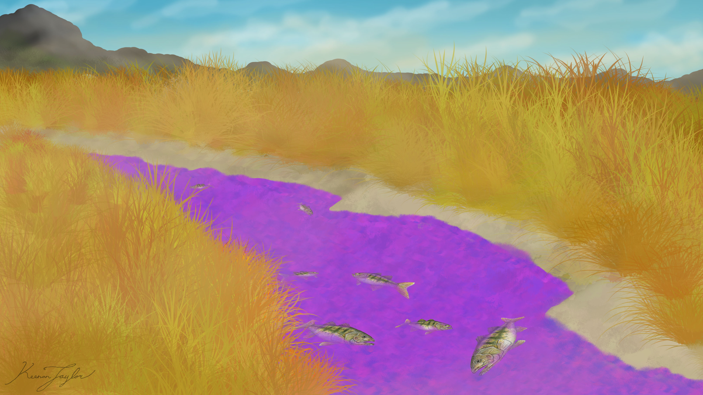
The Seridic Wetlands and several basins in Arvel experienced another form of ecological disaster. Constant storms and the accompanying release of nutrients are thought to have contributed to extensive algal and magical blooms. These blooms devastated many local fish populations, particularly in aquatic environments that were already undergoing rapid environmental change.
The southern archipelago also experienced extensive flooding. Much of the exposed Pakardiokhalin continental terrain was submerged, forcing terrestrial populations toward the highlands and isolated islands. Some of these populations remained restricted to these refuges into the modern period, while others disappeared entirely.
The Great Drying's characteristic fauna consequently underwent a major decline. Animals that had flourished in the open grasslands, including several of the most abundant herbivores and predators, lost much of their former habitat. Many of the most recognizable animals of the period became extinct, while others survived only in the increasingly isolated northern and southern refuges.
The South American Harvest and the Beginning of the Anchored Period
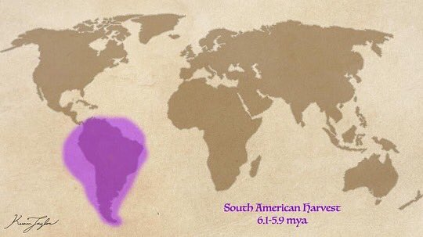
The rapid climatic and ecological transformation produced another major Harvest. This time, the principal source was Late Miocene South America, whose flora and fauna were particularly well suited to the emerging warm and humid environments.
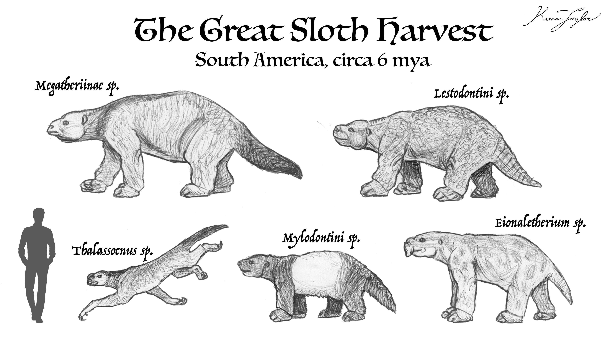
The resulting introduction brought a substantial influx of sloths, terror birds, notoungulates, and other characteristic South American animals into the Known World. Freshwater fish were also introduced, particularly in the Seridic Wetlands and eastern Arvel, where the earlier climatic disruption had devastated native aquatic communities. The flora of the South American harvest similarly filled many of the ecological vacancies created by the destruction of the earlier wetland and forest vegetation.
The success of these introduced organisms was exceptional. Their establishment helped stabilize the region and contributed to the beginning of the Anchored Period, an interval of nearly five million years characterized by relatively stable warm and humid conditions. The Known World became a substantially more forested and biologically productive environment, and the majority of its ecosystems came to be dominated by the descendants of South American harvest fauna and the resident organisms that had survived the Great Drying.
The remaining grassland species were increasingly restricted to the drier regions north of the equator, particularly those lying within the rain shadow of the Silverback Mountains. Even there, their habitats were often fragmented or periodically invaded by more humid conditions. The open-country ecosystems that had characterized the Great Drying were largely replaced by forests, wetlands, and extensive mosaic woodland.
The arrival of the South American fauna also produced substantial changes in the predator communities. Terror birds and other large predators established themselves in habitats previously occupied by machairodonts, apeirovenatords, and other Great Drying specialists. Some native predators persisted, but their ecological positions were altered by the new environmental context and the arrival of additional competitors.
08 · The Legacy of the Badlands
Evolutionary Legacy of the Great Drying
Persistence of the Northern Ni'Khari Lineages
Although the majority of the Great Drying fauna disappeared from the Known World, some lineages survived beyond the end of the event. Their persistence was generally associated with the continued presence of suitable dry habitats in the northern regions, where the rain-shadow effect of the Silverback Mountains prevented the complete establishment of humid conditions.
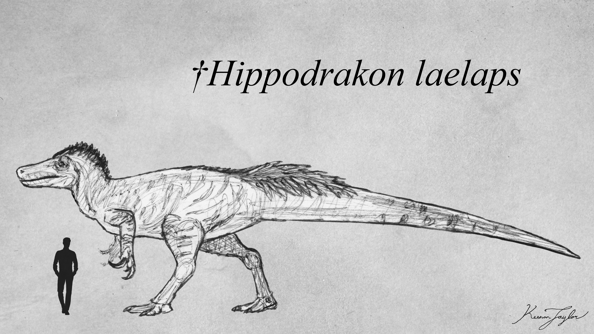
The taro lineage is one of the clearest examples. The megaraptorid Macrosceles, common throughout the Great Drying, is considered ancestral to the modern taro. Its descendants were well adapted to open environments and became increasingly successful in regions where large herbivores remained available. The later giant species Hippodrakon laelaps became the apex predator of the Ni'Khar grasslands during the Anchored Period, maintaining its position until the arrival of the uktan from Kairul during the later ecological turnover associated with the expansion of houze grass.
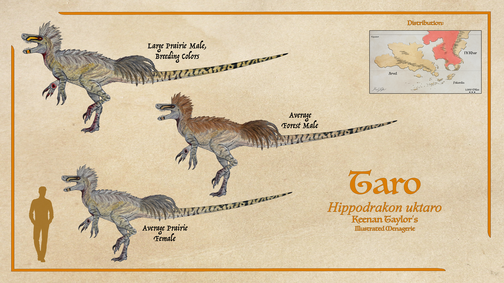
The modern taro retains many of the characteristics that contributed to its ancestors' success during the Great Drying. It is extremely lightweight for its size, with a highly pneumatic skeleton and relatively low energetic requirements. These adaptations allow it to persist in dry environments where other large predators would struggle to obtain sufficient food. In the modern Known World it is generally less conspicuous than the harkundi terror bird, with which it competes for prey, but it remains successful in more northerly regions beyond many major settlements. Its greater abundance and size in the northern interior reflect the persistence of open habitats beyond the equatorial region.
The Great Drying therefore established an ecological foundation that permitted the taro lineage to survive several subsequent changes in climate and vegetation. Its modern descendants are not merely remnants of a once-abundant predator fauna, but examples of lineages whose adaptations remained useful even after the ecosystems that originally favored them had largely disappeared.
Persistence of the Northern Ni'Khari Lineages
The equids, camelids, pronghorns, and other cursorial mammals that flourished during the Great Drying also left a substantial evolutionary legacy. Although most of the specific species characteristic of the period disappeared during later climatic transformations, the adaptations developed and refined during this interval remained important among their descendants.
Astrohippus areioni and Aepycamelus burki demonstrate how successfully mammals could exploit the emerging grassland ecosystems. Their abundance, geographical distribution, and repeated occurrence in fossil formations indicate that they were among the principal herbivores of the mature Great Drying. Their evolutionary history also provides an important context for understanding later grassland faunas, in which similar locomotor and feeding adaptations would again become advantageous.
The runnendrake Kamptotarsus is particularly important for the history of the modern elasmarians. The Great Drying appears to have been the interval during which the lineage developed many of the adaptations associated with its later cursorial forms like the podocorns. The modern runnendrakes are among the most familiar sprinters of the open grasslands, and their evolutionary development can be traced through the ecological pressures imposed by this period.
The avudi, another cursorial protoceratopsian, represents one of the most persistent relics. It is among the few animals believed to have maintained a presence in the grasslands throughout the Great Drying and the subsequent climatic changes. Unlike many of the larger grassland specialists, which disappeared when the Known World became warm and humid, the avudi appears to have survived through the entire sequence of ecological transformations. It remains one of the most significant examples of continuity between the Great Drying fauna and the modern ecosystems.
The Return of Grassland Fauna During the Later Pleistocene
The Known World experienced another period of cooling and aridity approximately 1.5 million years ago, although this event was less severe than the Great Drying. Grasslands expanded once again, particularly in Ni'Khar, and some animals from the northern regions returned to the Known World.
The resulting ecosystem was not, however, a direct restoration of the Great Drying fauna. The spread of houze grass transformed many of the savannas into more extensive open prairies, and these environments were increasingly occupied by animals migrating from Kairul. The new conditions favored the arrival of Kairulan fauna rather than the widespread return of the old Great Drying lineages.

Several modern animals nevertheless retain ancestry associated with the earlier period. Camels, pronghorns, and runnendrakes are examples of groups whose evolutionary histories were strongly shaped by the Great Drying, even though many of the forms now living in the Known World are immigrants from the houze prairies of Kairul. The same broad pattern applies to the uktan. Their relatives in the Known World disappeared during the humid Anchored Period, but the lineage persisted and diversified in Kairul, eventually returning to occupy its former ecological territory.
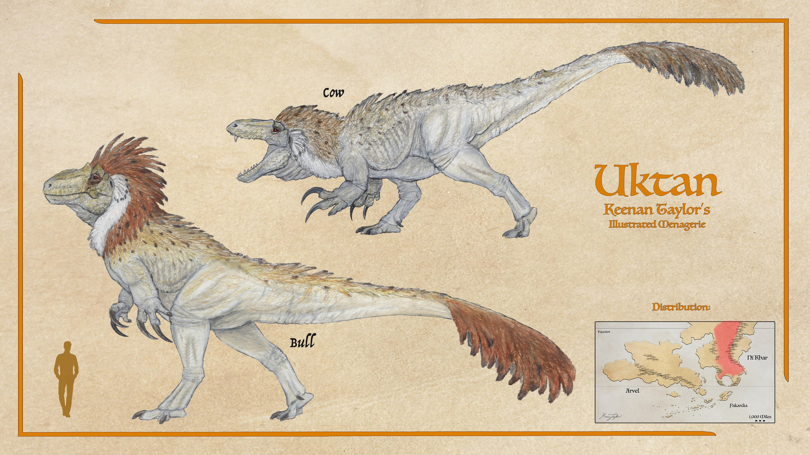
The return of uktan had a substantial impact upon the remaining large predators of Ni'Khar. The giant Hippodrakon laelaps, which had dominated the grasslands during the Anchored Period, disappeared during the later faunal turnover associated with the arrival of the uktan. The taro lineage itself survived, but its large-bodied representatives became less important in the Known World, where new predators and competitors increasingly occupied the available niches.
The later history of Ni'Khar therefore reflects the enduring consequences of the Great Drying, even though the modern inhabitants of its grasslands are not simply surviving members of the original fauna. The Great Drying established several important evolutionary lineages and produced adaptations that would later prove valuable in Kairul and other regions beyond the immediate influence of the Known World.